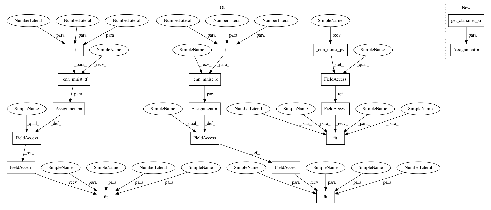

1b43239838df176cf0cc31d15ce65eec4fe71ffe,art/attacks/virtual_adversarial_unittest.py,TestVirtualAdversarial,setUpClass,#Any#,45
Before Change
cls.mnist = (x_train, y_train), (x_test, y_test)
// Keras classifier
cls.classifier_k = cls._cnn_mnist_k([28, 28, 1])
cls.classifier_k.fit(x_train, y_train, batch_size=BATCH_SIZE, nb_epochs=2)
scores = cls.classifier_k._model.evaluate(x_train, y_train)
logging.info("[Keras, MNIST] Accuracy on training set: %.2f%%", (scores[1] * 100))
scores = cls.classifier_k._model.evaluate(x_test, y_test)
logging.info("[Keras, MNIST] Accuracy on test set: %.2f%%", (scores[1] * 100))
// Create basic CNN on MNIST using TensorFlow
cls.classifier_tf = cls._cnn_mnist_tf([28, 28, 1])
cls.classifier_tf.fit(x_train, y_train, nb_epochs=2, batch_size=BATCH_SIZE)
scores = get_labels_np_array(cls.classifier_tf.predict(x_train))
acc = np.sum(np.argmax(scores, axis=1) == np.argmax(y_train, axis=1)) / y_train.shape[0]
logging.info("[TF, MNIST] Accuracy on training set: %.2f%%", (acc * 100))
scores = get_labels_np_array(cls.classifier_tf.predict(x_test))
acc = np.sum(np.argmax(scores, axis=1) == np.argmax(y_test, axis=1)) / y_test.shape[0]
logging.info("[TF, MNIST] Accuracy on test set: %.2f%%", (acc * 100))
// Create basic PyTorch model
cls.classifier_py = cls._cnn_mnist_py()
x_train, x_test = np.swapaxes(x_train, 1, 3), np.swapaxes(x_test, 1, 3)
cls.classifier_py.fit(x_train, y_train, nb_epochs=2, batch_size=BATCH_SIZE)
scores = get_labels_np_array(cls.classifier_py.predict(x_train))
acc = np.sum(np.argmax(scores, axis=1) == np.argmax(y_train, axis=1)) / y_train.shape[0]
logging.info("[PyTorch, MNIST] Accuracy on training set: %.2f%%", (acc * 100))
After Change
cls.mnist = (x_train, y_train), (x_test, y_test)
// Keras classifier
cls.classifier_k, sess = get_classifier_kr()
scores = cls.classifier_k._model.evaluate(x_train, y_train)
logging.info("[Keras, MNIST] Accuracy on training set: %.2f%%", (scores[1] * 100))
scores = cls.classifier_k._model.evaluate(x_test, y_test)
In pattern: SUPERPATTERN
Frequency: 8
Non-data size: 18
Instances
Project Name: IBM/adversarial-robustness-toolbox
Commit Name: 1b43239838df176cf0cc31d15ce65eec4fe71ffe
Time: 2019-02-13
Author: beat.buesser@ie.ibm.com
File Name: art/attacks/virtual_adversarial_unittest.py
Class Name: TestVirtualAdversarial
Method Name: setUpClass
Project Name: IBM/adversarial-robustness-toolbox
Commit Name: b61ad3acb6c757bd481dae451c76b615c17e14a1
Time: 2019-02-13
Author: beat.buesser@ie.ibm.com
File Name: art/attacks/iterative_method_unittest.py
Class Name: TestIterativeAttack
Method Name: setUpClass
Project Name: IBM/adversarial-robustness-toolbox
Commit Name: f44a1b5cbb8b9a92ad4cde6966d04431f5933cdb
Time: 2019-02-13
Author: beat.buesser@ie.ibm.com
File Name: art/attacks/deepfool_unittest.py
Class Name: TestDeepFool
Method Name: setUpClass
Project Name: IBM/adversarial-robustness-toolbox
Commit Name: 4b9f92cb585e4f38a98ae4cbc1b11cc73e711b62
Time: 2019-02-13
Author: beat.buesser@ie.ibm.com
File Name: art/attacks/saliency_map_unittest.py
Class Name: TestSaliencyMap
Method Name: setUpClass
Project Name: IBM/adversarial-robustness-toolbox
Commit Name: 22ff1e4541e6c5e780eae0a33b38e0d2623f9f3b
Time: 2019-02-13
Author: beat.buesser@ie.ibm.com
File Name: art/attacks/projected_gradient_descent_unittest.py
Class Name: TestPGD
Method Name: setUpClass
Project Name: IBM/adversarial-robustness-toolbox
Commit Name: f32e0f17f9e051abbaa5a3f1e76826e3daeeef1f
Time: 2019-03-04
Author: molloyim@us.ibm.com
File Name: art/attacks/query_efficient_bb_unittest.py
Class Name: TestWrappingClassifierAttack
Method Name: setUpClass
Project Name: IBM/adversarial-robustness-toolbox
Commit Name: 94cd8e7d5953a7d280b928e10951587220fa4ca6
Time: 2019-02-13
Author: beat.buesser@ie.ibm.com
File Name: art/attacks/fast_gradient_unittest.py
Class Name: TestFastGradientMethod
Method Name: setUpClass
Project Name: IBM/adversarial-robustness-toolbox
Commit Name: 1b43239838df176cf0cc31d15ce65eec4fe71ffe
Time: 2019-02-13
Author: beat.buesser@ie.ibm.com
File Name: art/attacks/virtual_adversarial_unittest.py
Class Name: TestVirtualAdversarial
Method Name: setUpClass
Project Name: IBM/adversarial-robustness-toolbox
Commit Name: 29d8be2e2e4c965e267d6ec8c93da789b03dde0b
Time: 2019-02-13
Author: beat.buesser@ie.ibm.com
File Name: art/attacks/margin_attack_unittest.py
Class Name: TestMarginAttack
Method Name: setUpClass